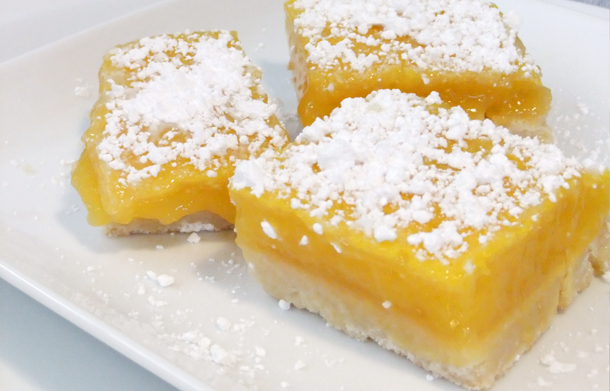

Welcome! My name is Andrea and I am a senior at Saint Joseph's Univeristy in Philadelphia, PA. I am graduating this December with a Communications and Marketing degree. There are alot of things I have learned over the years about food, shopping, financials, and exercise that I would love to share with you. Enjoy!
The Farmer's Market Tale
Lemon Bars:
My boyfriend and I were exploring the neightborhood we live in, and we stumbled upon a farmer's market in the back of a nearby church. Turns out, an Amish group from Lancaster, PA and other local farmers bring thier food and drinks for locals to buy. I generally do not like lemon-flavored treats, but my boyfriend insisted that we try them. Much to my surprise, these powdered covered desserts were amazing! They are also made from real sugar, baking, powder, flour, etc. so it is certainly a better option than oreos or other foods from the store that have preservatives or other chemicals in them. These bars only cost $3.50 for a bag of eight, so they are certainly affordable. Go out and explore your neighbor hood, you never know what you will find or like!
